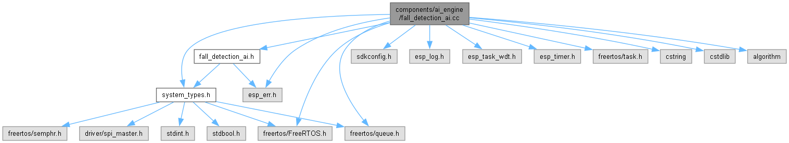
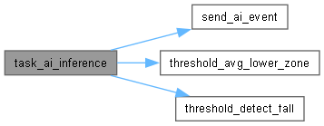

- Generated by
 1.14.0
1.14.0
|
LexaCare V1 — Firmware ESP32-S3 v1.0
Système de détection de chute par LIDAR et Radar
|
Moteur d'inférence de détection de chute — dual-mode ESP-DL / seuil. More...
#include "fall_detection_ai.h"#include "system_types.h"#include "sdkconfig.h"#include "esp_log.h"#include "esp_err.h"#include "esp_task_wdt.h"#include "esp_timer.h"#include "freertos/FreeRTOS.h"#include "freertos/task.h"#include "freertos/queue.h"#include <cstring>#include <cstdlib>#include <algorithm>
Go to the source code of this file.
Data Structures | |
| struct | ai_task_ctx_t |
Macros | |
| #define | CONFIG_AI_HISTORY_LEN 8 |
| #define | CONFIG_AI_FALL_THRESHOLD_PERCENT 80 |
| #define | CONFIG_AI_FALL_CONFIDENCE_THRESHOLD 85 |
| #define | TASK_STACK_SIZE (12288) |
| #define | TASK_PRIORITY (9) |
| #define | TASK_CORE (1) |
| #define | FALL_DISTANCE_MAX_MM 1500 |
Functions | |
| static float | threshold_avg_lower_zone (const lidar_matrix_t *matrix) |
| static ai_event_state_e | threshold_detect_fall (ai_task_ctx_t *ctx, float current_mm, uint8_t *confidence) |
| static void | send_ai_event (const ai_task_ctx_t *ctx, const ai_event_t *event) |
| static void | task_ai_inference (void *pvParam) |
| esp_err_t | ai_engine_task_start (sys_context_t *ctx) |
Variables | |
| static const char * | TAG = "ai_engine" |
Moteur d'inférence de détection de chute — dual-mode ESP-DL / seuil.
Ce fichier est compilé en C++ (requis pour l'API ESP-DL). L'interface externe est exposée via extern "C" pour la compatibilité avec main.c et les autres composants C.
=== MODE MODÈLE (CONFIG_AI_USE_ESPDL_MODEL=y) === Charge /littlefs/fall_model.espdl via dl::Model::load(). Construit un Tensor<int16_t> 8×32×1 depuis lidar_matrix_t. Exécute model->run(). Lit la sortie softmax [P_normal, P_chute]. Si P_chute > CONFIG_AI_FALL_CONFIDENCE_THRESHOLD% → AI_CHUTE_DETECTEE.
=== MODE SEUIL (CONFIG_AI_USE_ESPDL_MODEL=n, défaut) === Algorithme géométrique sur lidar_matrix_t :
=== RÈGLE DE PRIORITÉ MESH (contrainte stricte) === AI_CHUTE_DETECTEE → xQueueSendToFront(ai_to_mesh_queue, ...) Autres états → xQueueSend(ai_to_mesh_queue, ...)
Definition in file fall_detection_ai.cc.
| #define CONFIG_AI_FALL_CONFIDENCE_THRESHOLD 85 |
Definition at line 55 of file fall_detection_ai.cc.
Referenced by task_ai_inference().
| #define CONFIG_AI_FALL_THRESHOLD_PERCENT 80 |
Definition at line 52 of file fall_detection_ai.cc.
Referenced by task_ai_inference(), and threshold_detect_fall().
| #define CONFIG_AI_HISTORY_LEN 8 |
Definition at line 49 of file fall_detection_ai.cc.
Referenced by task_ai_inference(), and threshold_detect_fall().
| #define FALL_DISTANCE_MAX_MM 1500 |
Definition at line 76 of file fall_detection_ai.cc.
Referenced by threshold_detect_fall().
| #define TASK_CORE (1) |
Definition at line 73 of file fall_detection_ai.cc.
Referenced by ai_engine_task_start(), lidar_driver_start(), and pc_diag_task_start().
| #define TASK_PRIORITY (9) |
Definition at line 72 of file fall_detection_ai.cc.
Referenced by ai_engine_task_start(), lidar_driver_start(), and pc_diag_task_start().
| #define TASK_STACK_SIZE (12288) |
Definition at line 71 of file fall_detection_ai.cc.
Referenced by ai_engine_task_start(), lidar_driver_start(), and pc_diag_task_start().
|
static |
Definition at line 253 of file fall_detection_ai.cc.
References AI_CHUTE_DETECTEE, sys_context_t::ai_to_mesh_queue, ai_event_t::confidence, sys_context_t::diag_to_pc_queue, ai_event_t::state, ai_task_ctx_t::sys_ctx, and TAG.
Referenced by task_ai_inference().
|
static |
Definition at line 285 of file fall_detection_ai.cc.
References AI_NORMAL, CONFIG_AI_FALL_CONFIDENCE_THRESHOLD, CONFIG_AI_FALL_THRESHOLD_PERCENT, CONFIG_AI_HISTORY_LEN, sensor_frame_t::lidar, sensor_frame_t::lidar_valid, send_ai_event(), sys_context_t::sensor_to_ai_queue, ai_task_ctx_t::sys_ctx, TAG, threshold_avg_lower_zone(), and threshold_detect_fall().
Referenced by ai_engine_task_start().

|
static |
Definition at line 106 of file fall_detection_ai.cc.
References lidar_matrix_t::data, LIDAR_COLS, and LIDAR_ROWS.
Referenced by task_ai_inference().
|
static |
Definition at line 134 of file fall_detection_ai.cc.
References AI_CHUTE_DETECTEE, AI_MOUVEMENT_ANORMAL, AI_NORMAL, CONFIG_AI_FALL_THRESHOLD_PERCENT, CONFIG_AI_HISTORY_LEN, ai_task_ctx_t::dist_history, FALL_DISTANCE_MAX_MM, ai_task_ctx_t::history_full, ai_task_ctx_t::history_head, and TAG.
Referenced by task_ai_inference().
|
static |
Definition at line 66 of file fall_detection_ai.cc.